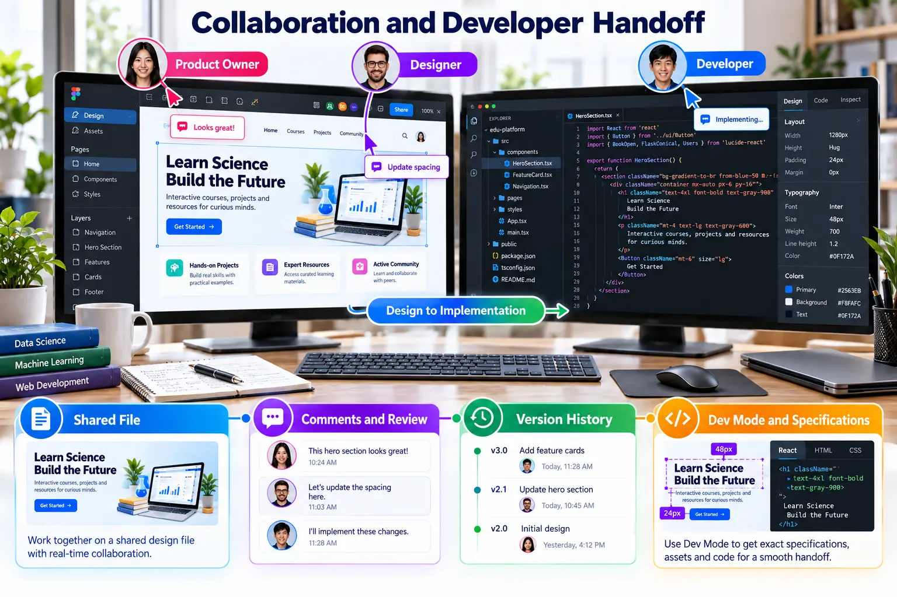

Designers and developers need a shared language
Clear naming, reusable components, review comments and implementation-ready specifications reduce ambiguity.

Responsibilities in the shared workflow
| Role | Primary contribution |
|---|---|
| Product owner | Clarifies users, requirements, priorities and acceptance criteria. |
| Designer | Creates flows, components, prototypes and documented decisions. |
| Developer | Inspects properties, validates feasibility and implements behaviour. |
| Reviewer | Tests usability, accessibility and consistency. |
Handoff checklist
- Pages, frames, components and layers use meaningful names.
- Approved and draft designs are clearly separated.
- Comments are resolved only after the revision is verified.
- Spacing, typography, colours and component states are inspectable.
- Required assets are exportable in appropriate formats.
- The prototype and implementation describe the same user flow.
Evidence: Capture one resolved comment, one component specification and one example showing how an Auto Layout decision maps to the implemented interface.